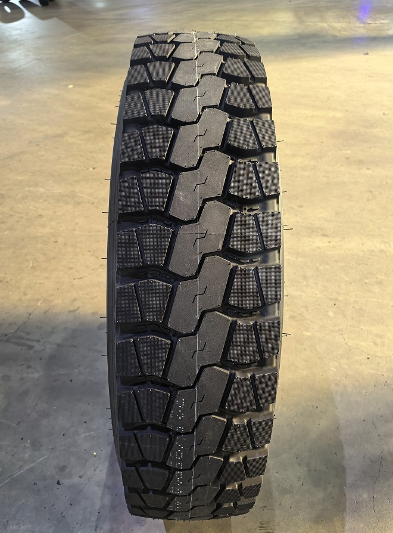
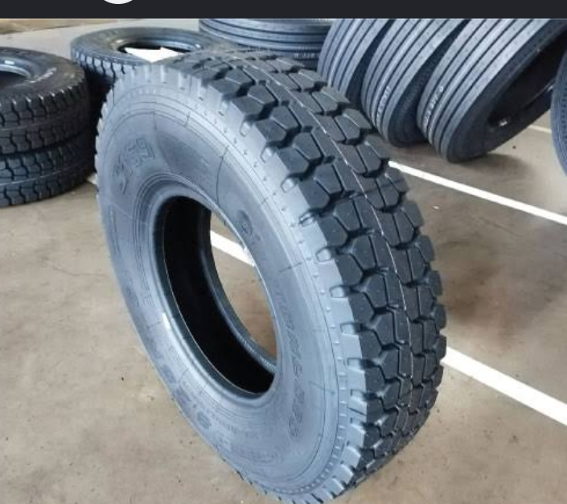

KSh 45,000
Townhall TH608
Size 315/80R22.5. Heavy-duty tyre for trucks and buses...
These are Townhall TH608 model truck tires, specifically size 315/80R22.5.
They are heavy-duty, on/off-road tires designed for trucks,
mixer delivery vehicles, or buses.
WhatsApp
KSh 18,000
Roadcruza RA1100
Size 205/60R16 all-terrain tyre with 92T load index...
These are Roadcruza RA1100 All-Terrain tires.
The tire size is 205/60R16,
featuring a 92T load/speed index.
WhatsApp
KSh 48,000
Bison AZ118
Size 315/80R22.5 radial tyre for mixed service use...
These are Bison AZ118 truck tires, specifically size 315/80R22.5.
The 157/154K load index indicates a maximum load capacity
of 4,125kg single and 3,750kg dual.
Suitable for mixed highway and off-highway service.
WhatsApp
KSh 38,000



Sportrak SP301
Premium drive axle tyre for trucks and buses...
This product is a Sportrak brand drive axle tire,
specifically model SP301.
It is designed for trucks and buses,
available in sizes such as 265/70R19.5-16PR.
WhatsApp
KSh 29,000
BKT Farm Implement I-1
Agricultural tyre for wagons and trailers...
Designed for towed agricultural equipment.
Features a ribbed tread pattern for steering control
and a reinforced compound resistant to cuts,
stubble damage and abrasions.
WhatsApp
KSh 65,000
BKT Rock Grip (IND4)
Industrial tyre for ports and heavy equipment...
Commonly used for port container handling equipment
and reach stackers.
Features a specialized compound for heat and cut resistance
in demanding industrial environments.
WhatsApp